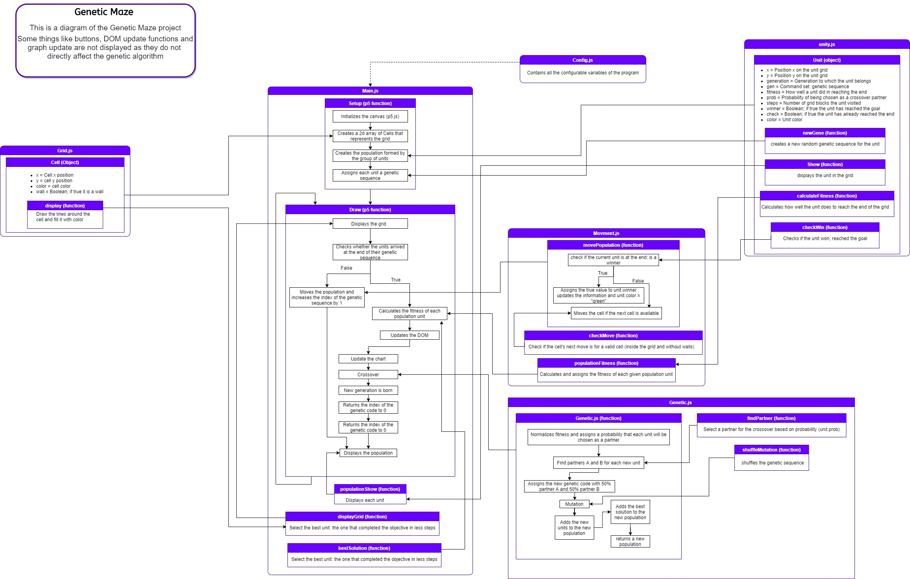

Genetic algorithms use several concepts from biology applied in computing to solve problems, in general, linked to optimization.
Through a concept of evolution, the simulated "organisms" and their offspring learn
to do a certain task (to get from one end to the other in the labyrinth in this case)
The evolution, mutation and crossover processes (discussed below) are performed by small simulated "individuals" called, in this program, units.
The unit can belong to 3 categories, each represented by a color: Red
is normal units; Purple ones are units that "born", that is, during the crossover process, they mutated; Yellow is the best individual found so far.
At "birth", each unit receives a genetic sequence which is a list of genes that represent instructors of how the organism will behave.
Its genetic code is read and executed in sequence from the first to the last gene (in
the end it "reproduces" and dies).
Each "gene" is an instruction on how the unit should move, this is represented by a number from 1 to 4: 1 it moves to the right, 2 down, 3 left and 4 up.
At the end of the life of the entire population, the best individuals are selected to crossover
Crossover is the process of joining two genetic sequences in one child. So if we have two individuals and their respective sequences
A: [3,3,2,4] and B: [1,1,2,2] they will generate a child with a genetic sequence [3,3,2,2].
A unit can reproduce several times until there are already individuals for the next generation
The concept of generation is very similar to biology. Several parents have children ie parents are generation x and children x + 1
The same applies to the algorithm, generation 1 is generated randomly before it dies, it
reproduces and passes its genes on to generation 2 composed of the best of generation 1
Through this process, the units evolve and learn
Each unit receives a valuation according to its performance to achieve the objective. This value is called fitness.
The fitness of each individual is calculated by the distance between their last position and the end of
the maze.
An important step in the process is mutation:
At each crossover there is a small chance that the units will have their gene changed to something new, this increases the diversity of the population and prevents the algorithm
from stagnating in an average.
(Note that mutated units will be displayed in purple)
Several program parameters can be adjusted, including grid size, mutation rate, and population size
First navigate to the folder in the program, inside it open the scripts folder
ex: directory \ GeneticMaze \ scripts
Inside
this folder open the config.js file with a text editor (I recommend something like notepad ++)
The settings are in the following format
'configuration': value \\ description
To change just modify the value
Below you can see a complete diagram of the code, for details click on the link below the image
Code diagram